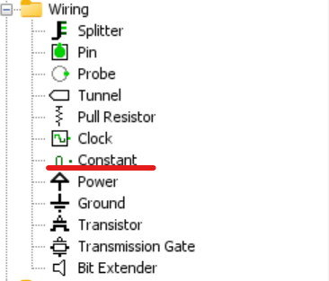
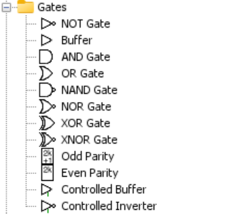
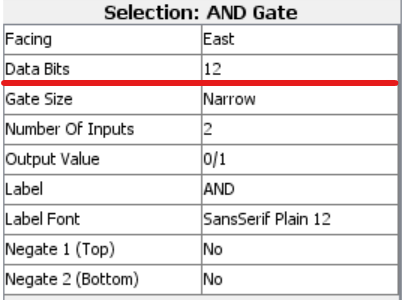
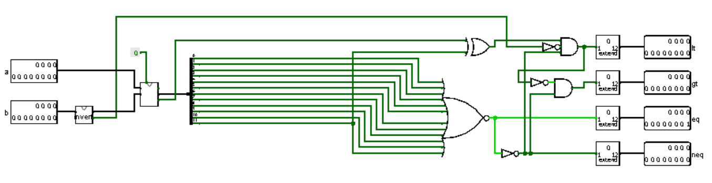
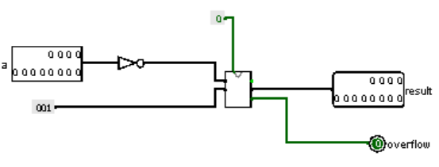
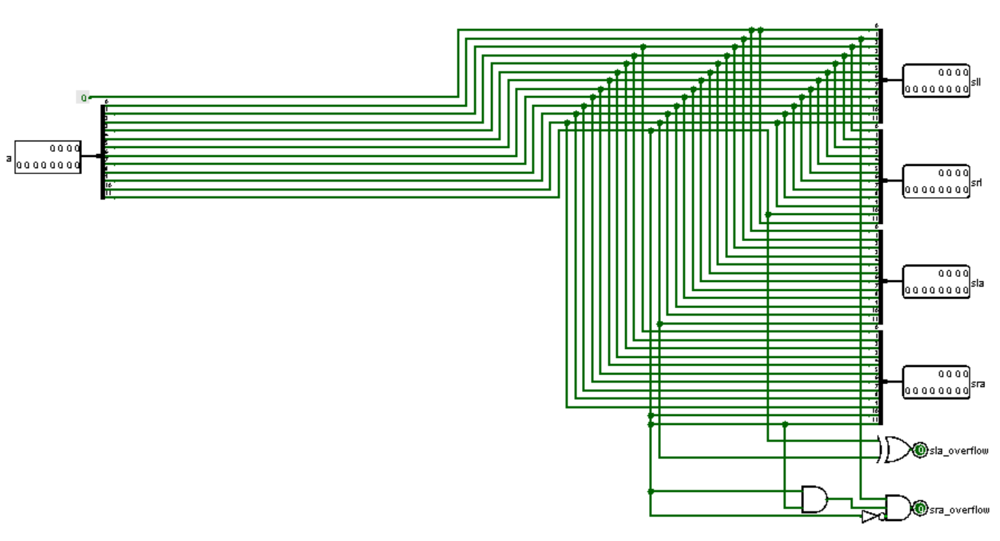

Titel: Computer Architectuur Project 3: ALU
Dit verslag werd opgesteld door:
De oplossing bestaat uit de volgende bestanden (geef alle bestanden op):
generate 0 (Name: zero; ALU operation: 0000).
Example:
result 000000000000
This is a 12-bit constant, thus we can use the Constant component from the Wiring library.
NOT (Name: not; ALU operation: 0001).
Example:
a 000001001010
result 111110110101
AND (Name: and; ALU operation: 0010).
Example:
a 000001001010
b 111111010101
result 000001000000
OR (Name: or; ALU operation: 0011).
Example:
a 000001001010
b 111110010101
result 111111011111
The utilization of the NOT gate for this solution is the most elegant way to implement the NOT operation in the ALU. This is very trivial. The same is applicable for the AND and OR operation. The only property that we have to change for the gates, is to set the Data Bits property to 12.
 numeric addition (two’s complement) (Name: add; ALU operation: 0100).
Example:
a 000001001010 (74)
b 111110010101 (-107)
result 111111011111 (-33)
numeric subtraction (two’s complement) (Name: sub; ALU operation: 0101).
Example:
a 000001001010 (74)
b 000001101010 (106)
result 111111100000 (-32)
The 12-bit CLA (Carry Lookahead Adder) can be utitlized for the implementation of the Add operation. We can use an extra MUX (multiplexor) for the overflow's. The same can be done for the Sub operation, however the B input should be inverted (using a 2's complement inverter).
less than (two’s complement) (Name: lt; ALU operation: 0110). Results in 1 if a < b, 0 if a ≥ b.
Example:
a 000001001010 (74)
b 111110010101 (-107)
result 000000000000 (false)
greater than (two’s complement) (Name: gt; ALU operation: 0111). Results in 1 if a > b, 0 if a ≤ b.
Example:
a 000001001010 (74)
b 000001101010 (106)
result 111111100000 (-32)
equals (Name: eq; ALU operation: 1000). Results in 1 if a = b, 0 if a ≠ b.
Example:
a 000001001010 (74)
b 111110010101 (-107)
result 000000000000 (false)
not equals (Name: neq; ALU operation: 1001). Results in 1 if a ≠ b, 0 if a = b.
Example:
a 000001001010 (74)
b 111110010101 (-107)
result 000000000001 (true)
The 12-bit CLA (Carry Lookahead Adder) can be utitlized for the implementation of the comparison operations. The is done by subracting B from A, and checking the results. Checking for equality is by NOR-ing all the output, inquality is done by OR-ing all the sums. A is less than B, if invert B does not give an overflow and A is not equal to B and most significant bit is not equal to overflow of subtraction. A is greater than B, if A and B are not equal and A is not less than B.
numeric inverse (two’s complement) (Name: inv; ALU operation: 1010).
Example:
a 000001001010 (74)
result 111110110110 (-74)
The inverse of A, 1 added to not A (Complement of A + 1) for 2's complement. Overflow can be detected using the overflow output of the 12-bit CLA.
shift left logical (two’s complement) (Name: sll; ALU operation: 1011).
Example:
a 000010101010
result 000101010100
shift right logical (two’s complement) (Name: srl; ALU operation: 1100).
Example:
a 000010101010
result 000001010101
shift left arithmetic (two’s complement) (Name: sla; ALU operation: 1101). This implements ”times two”
Example:
a 000000101010 (42)
result 000001010100 (84)
shift right arithmetic (two’s complement) (Name: sra; ALU operation: 1110). This implements ”divide by two” (integer division - test behaviour in Python).
Example:
a 000000101010 (42)
result 000000010101 (21)
Logic Shift, pushes a 0 from the left in a Left Logical Shift, and from the right in a Right Logical Shift. Left Arithmetic Shift, does the same as Shift Left Logical, but it may throw an overflow, and it can be detected by XOR-ing the 2 most significant bits. Shift Right Arithmetic, shifts to the right, but preserves the sign bit, It can also cause an overflow.
no operation (Name: noop; ALU operation: 1111).
Example:
a 000001001010
result 000001001010
A no-operation can be implemented by directly connecting A to MUX.
All tests were successful.